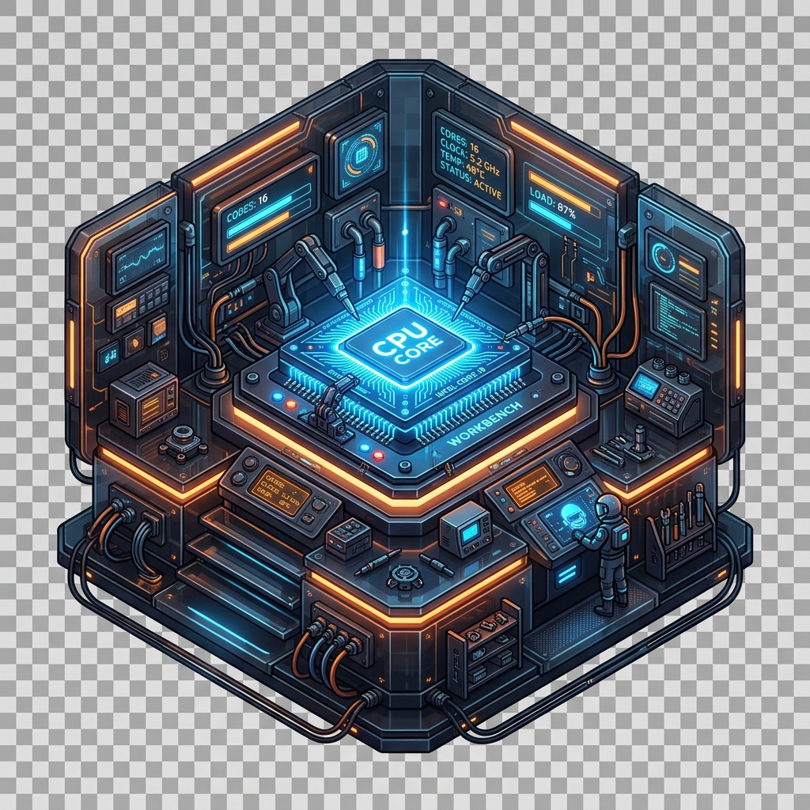
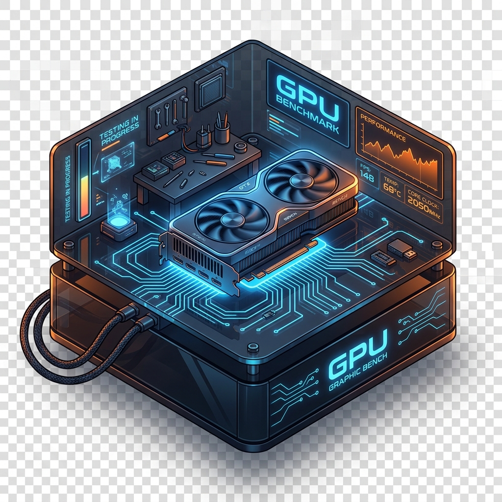
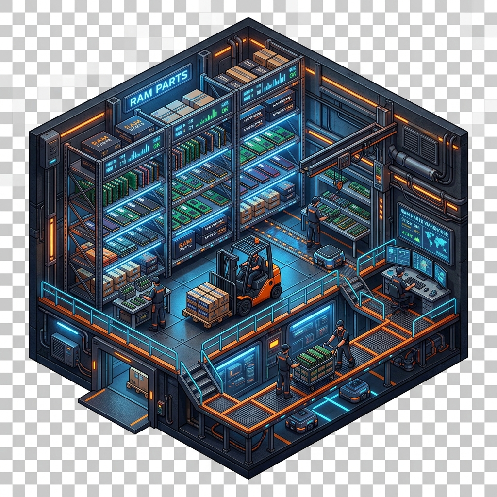
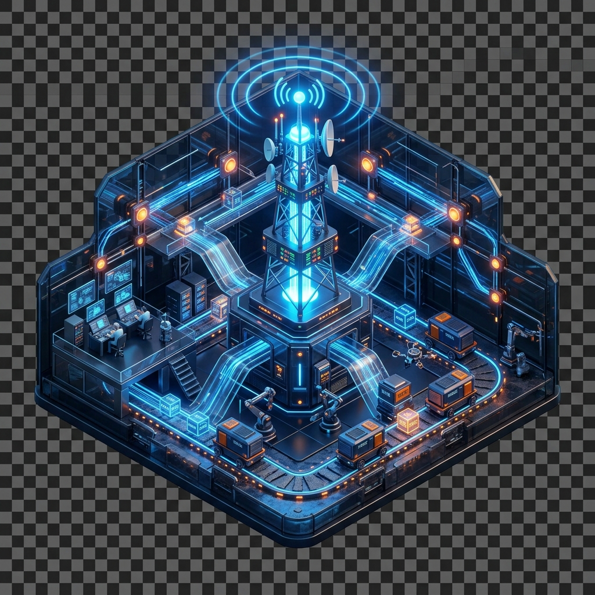
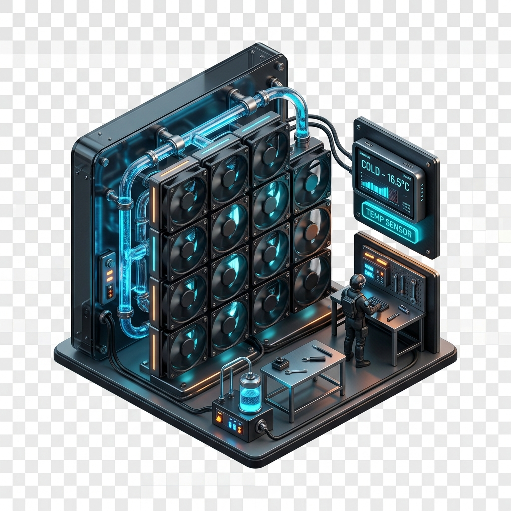
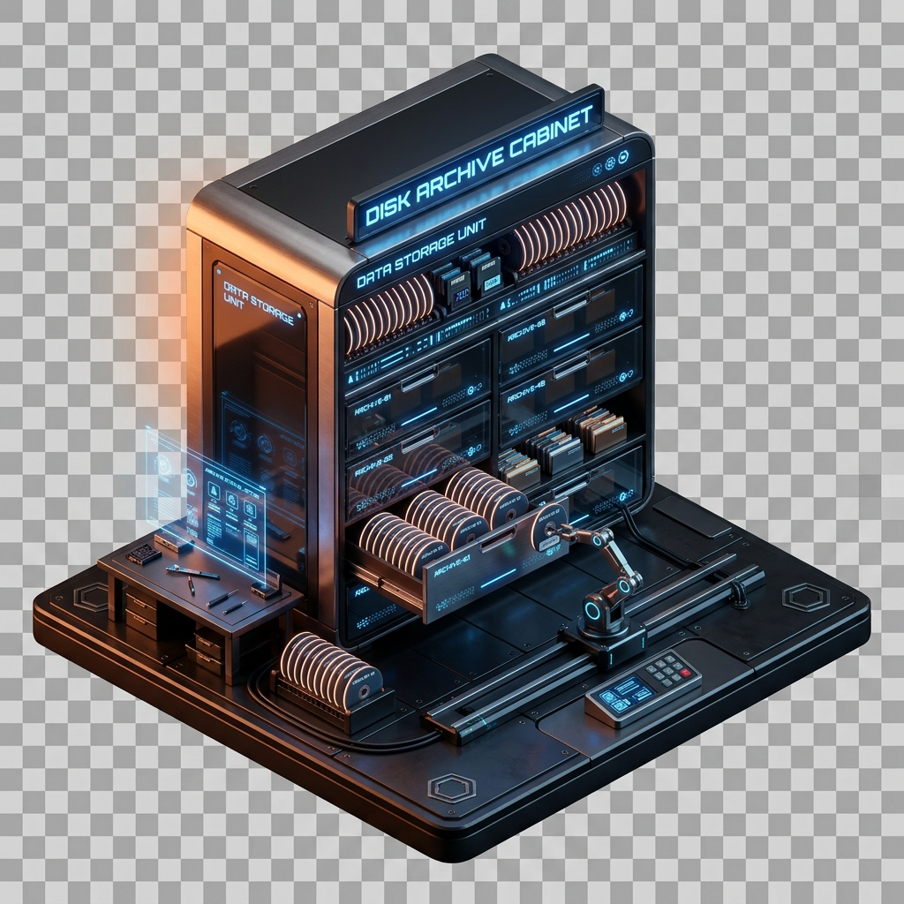

工坊控制台
正在全力监控您的工作区...
当前状态:
Idle 闲置
CPU 核心工作台
CPU Workbench
23%
稳定
工作频率: 3.4 GHz
线程活跃
GPU 渲染流水线
GPU Graphic Bench
18%
清凉
显存占用: 1.4 GB / 8 GB
图形负载低
RAM 零件仓库
RAM Parts Warehouse
46%
充沛
内存使用: 7.3 GB / 16 GB
缓存就绪
NET 数据传输站
Net Transfer Station
1.2M
流畅
上传: 450 KB/s
下载: 1.2 MB/s
TEMP 冷却风扇墙
Temp Cooling Wall
68℃
安全
风扇转速: 1200 RPM
温度适中
DISK 数据归档柜
Disk Archive Cabinet
62%
宽敞
读取: 12 MB/s
写入: 4 MB/s
今日零件
280
今日灵感
12
工坊效率
x1.2
高效运行
系统稳定度
98%
状态极佳
猫咪在线
02:35
迷你硬件工坊地图

LV.1
频率: 3.4 GHz
32%

LV.1
显存: 1.4 GB
18%

LV.1
已存: 7.3 GB
46%

LV.1
速度: 1.2 MB/s
25%

LV.1
风扇: 1200 RPM
68%

LV.1
占用: 62%
62%
工坊等级
Level 1
所需零件
150 / 280
所需灵感
5 / 12
核心工作台
零件强化
LV.1 → LV.2
工艺优化
LV.1 → LV.2
工坊配置控制台
CoreCat / 工程猫
您的个人硬件工坊诊断助理
🐱 桌宠设置
宠物大小
宠物透明度
气泡通知
允许宠物弹出对话气泡
静态模式
停止一切常驻循环动画
📊 监控栏设置
显示监控条
在桌面上固定浮动胶囊
紧凑模式
只显示核心 CPU 和 RAM 指标
始终置顶
浮动监控条处于所有窗口上方
显示位置
⚡ 运行设置
低功耗模式
减缓监控刷新率，降低系统占用
开机自启动
随着 Windows 启动后台开启
通知消息栏
异常情况允许向系统推送通知
声音反馈
🛡️ 安全与隐私
纯本地离线运行
无后台隐蔽占用
不涉及区块链及加密挖矿
所有操作均由用户完全控制
CoreWorkPal 严格遵照安全开发指南，不收集任何用户隐私数据，只从系统读取公开的硬件计数器进行图形化呈现。
CoreWorkPal 桌面伙伴
让工程更有序，让创意更自由。这是一个精心打磨的迷你桌面宠物、硬件监控与工坊养成系统，您的开发运维猫咪陪伴伴侣。
Version 1.0.0 (Release-Build)
产品设计理念
Pocket Glass Workshop (口袋玻璃工坊) 视觉规范。使用小巧、精致、克制的深色半透明面板与柔和边光，摆脱繁琐传统的控制台网格，融合萌宠养成逻辑，让枯燥的参数变为生动的交互动作。
本地优先与安全声明
无任何云端数据传输，所有系统参数均通过本地 Windows API 获取。完全绿色安全，不包含任何钱包、加密货币资产或隐藏计算资源开销。
交互小贴士
• 单击桌宠: 弹出随身工具小面板，进行快捷状态调整。
• 双击桌宠 / 点击桌面图标: 唤起主工坊系统。
• 右键桌宠: 弹出专有定制的深色玻璃上下文菜单。
快捷工坊链接